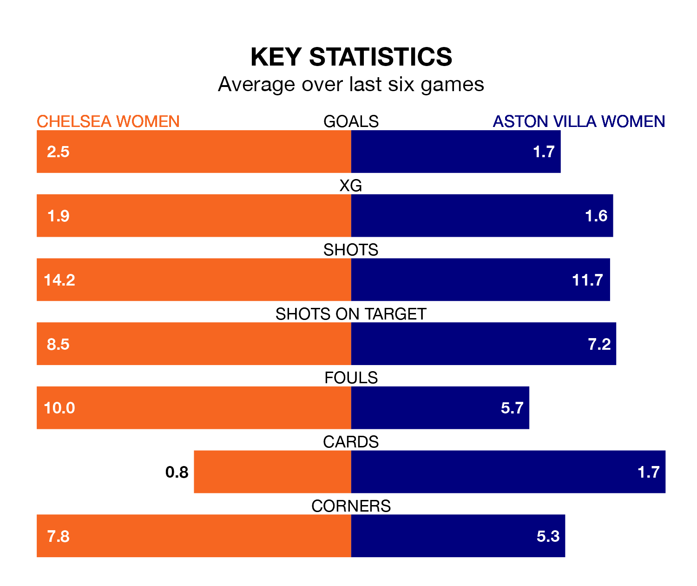

Chelsea Women host Aston Villa Women at Kingsmeadow on late Wednesday on the back of three consecutive wins in the FA Women's Super League.
Chelsea have picked up 15 points from their last six games, and they face a Villa side who drew their last match, and have collected eight points from the last possible 18.
With 50 goals in 17 games so far this season, Chelsea are the league's highest scorers with 2.9 goals per game. And they are conceding fewer than average, letting in 14 goals at a rate of 0.8 per game.
Aston Villa, meanwhile, are below average scorers, with 1.3 goals per game, compared to a league average of 1.6. They have conceded 2.1 goals per game.
The Blues are second in the table after 17 games, of which they have won 14 and drawn one, earning 43 points.
The Villa are five places behind the hosts in seventh, with six wins and two draws putting them on 20 points.
In Lauren James, Chelsea have one of the league's most on-form strikers so far this season. She has notched 13 goals in 15 appearances, to sit second in the scoring charts.
Her goal rate of one every 85 minutes is much quicker than that of Rachel Daly, the away team's top scorer with a goal every 206 minutes, and a total of seven goals in 16 games.
In the last 10 years, Chelsea and Aston Villa have played each other on 11 occasions. Chelsea won all of them.
On average, the Blues scored 3.0 goals and the Villa 0.3 in those matches.
Their last meeting was on November 4, when Chelsea won 6-0 away.
Chelsea's last match was on March 24, a 2-0 win against West Ham United Women, with Agnes Beever-Jones and Erin Cuthbert getting the goals for the Blues.
Aston Villa drew 2-2 with Leicester City WFC last time out, on March 30, with Adriana Leon and Daly on the scoresheet.
Updated: 10:01 (UTC), 12/04/24